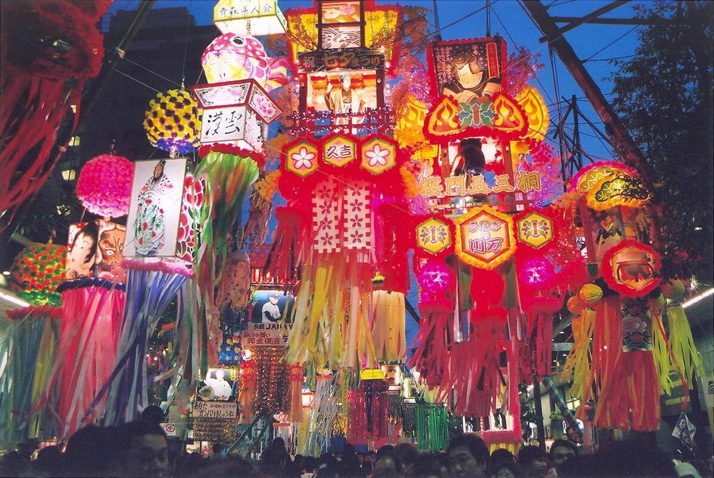
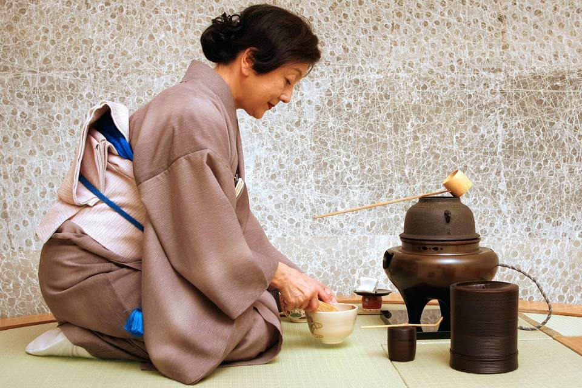
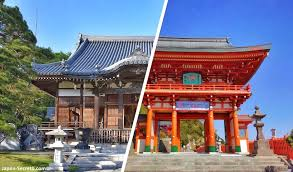

Explora las tradiciones milenarias que dan vida a la cultura japonesa.
El festival más famoso de Kioto con desfiles y carrozas tradicionales.

Festival de las estrellas relacionado con deseos y leyendas japonesas.
Tradición japonesa de observar la floración del cerezo Sakura.

Tradición japonesa basada en armonía y respeto.
Arte japonés de escritura tradicional.
Arte floral japonés inspirado en la naturaleza.

Espacios espirituales tradicionales de Japón.
Espectáculos visuales típicos de festivales japoneses.